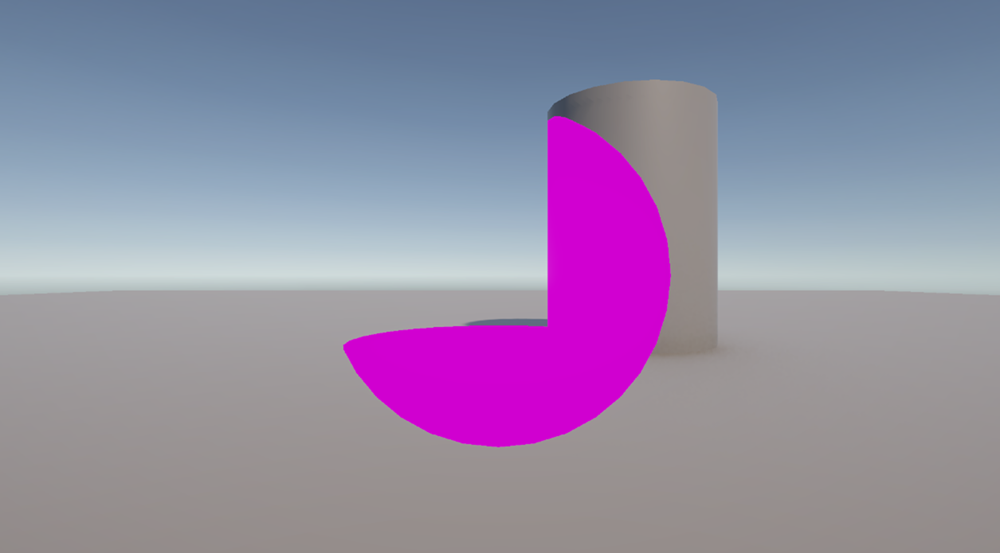
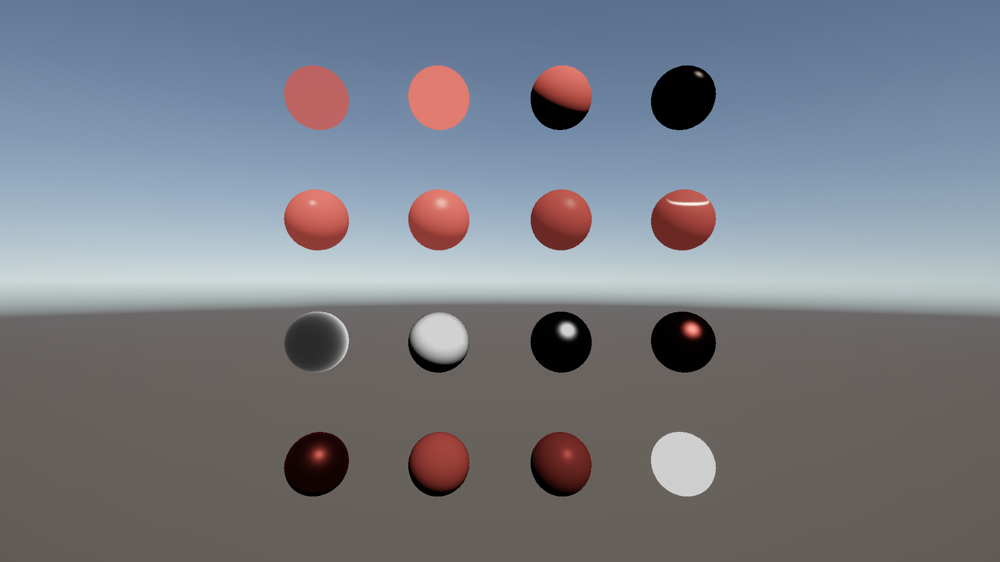
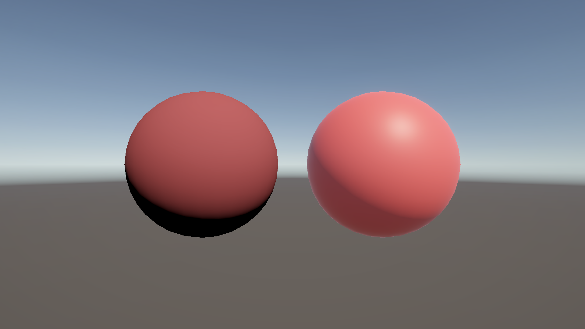
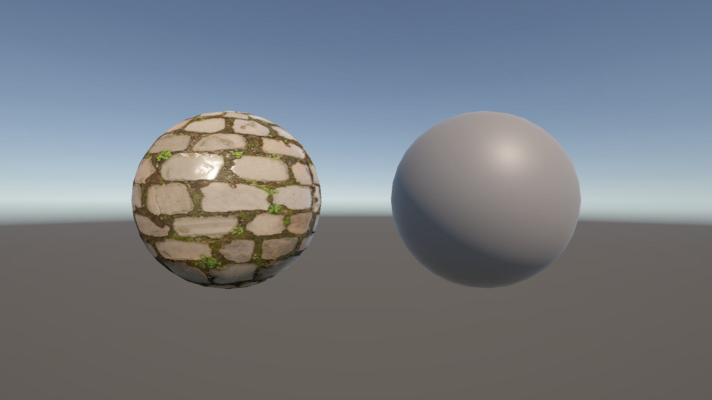
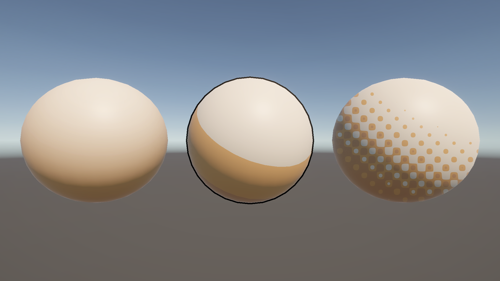
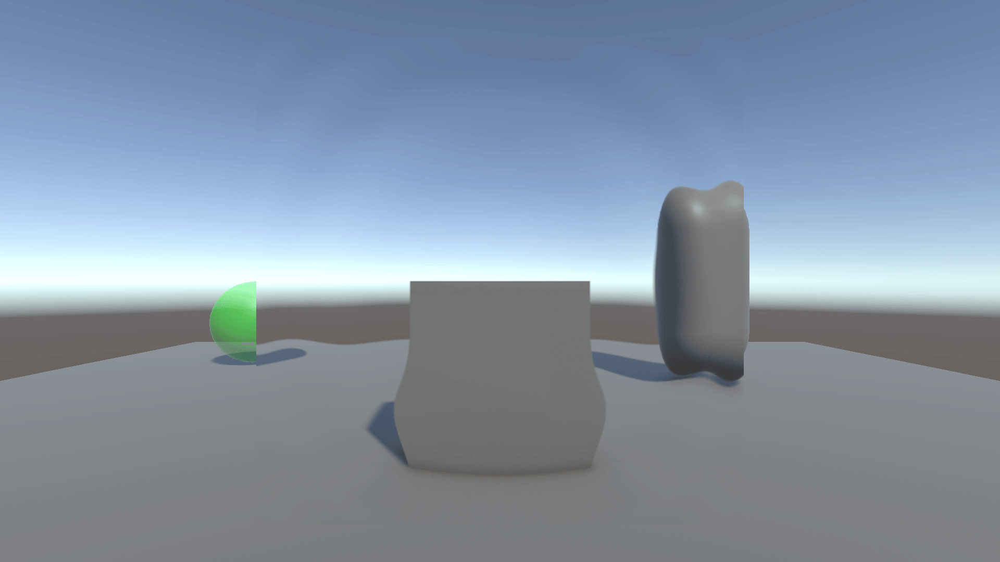
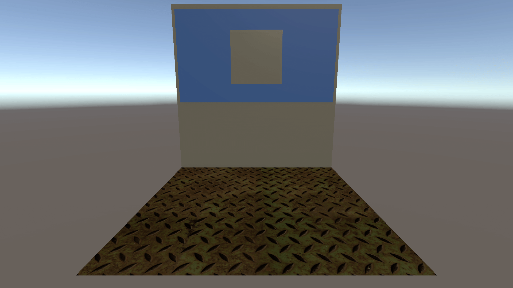
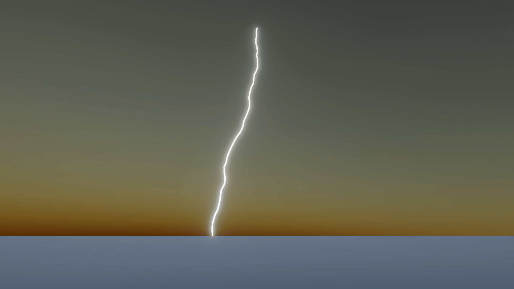
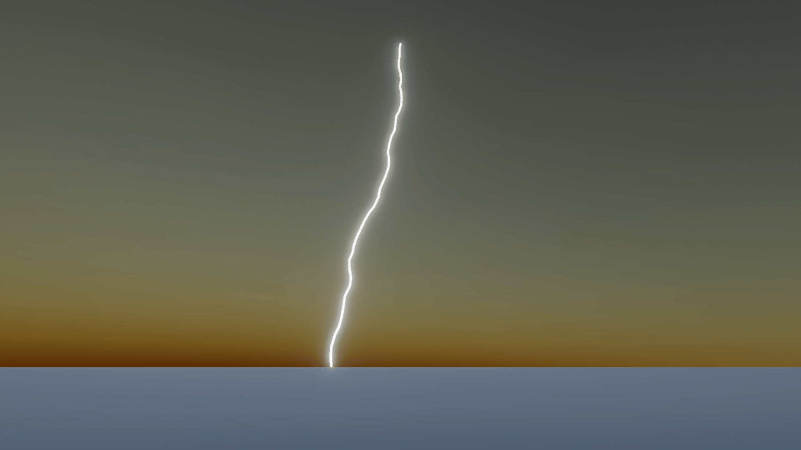

■はじめに
担当している授業「プログラムワークショップIV」の2025年度版の授業資料の公開です。
- 2025_PGWS4_(01)_ガイダンス.pdf
-  2025_PGWS4_(02)_シェーダコード.pdf [GitHub]
-  2025_PGWS4_(03)_表面反射.pdf [GitHub]
-  2025_PGWS4_(04)_シェーダグラフ.pdf [GitHub]
-  2025_PGWS4_(05)_PBRテクスチャ.pdf [GitHub]
-  2025_PGWS4_(06)_トゥーンシェ―ディング.pdf [GitHub]
 2025_PGWS4_(07)_時間変化.pdf [GitHub]
2025_PGWS4_(07)_時間変化.pdf [GitHub] 2025_PGWS4_(08)_キューブマップ.pdf [GitHub]
2025_PGWS4_(08)_キューブマップ.pdf [GitHub]
 2025_PGWS4_(09)_ノイズ.pdf [GitHub]
2025_PGWS4_(09)_ノイズ.pdf [GitHub]-  2025_PGWS4_(10)_レンダーターゲット・レンダーテクスチャ.pdf [GitHub]

 2025_PGWS4_(11)_カスタムレンダーテクスチャー.pdf [GitHub]
2025_PGWS4_(11)_カスタムレンダーテクスチャー.pdf [GitHub]  2025_PGWS4_(12)_CPUプロシージャル生成.pdf [GitHub]
 2025_PGWS4_(12)_CPUプロシージャル生成.pdf [GitHub] 2025_PGWS4_(13)_コンピュートシェーダ.pdf [GitHub]
2025_PGWS4_(13)_コンピュートシェーダ.pdf [GitHub] 2025_PGWS4_(14)_レイトレーシング.pdf [GitHub]
2025_PGWS4_(14)_レイトレーシング.pdf [GitHub]